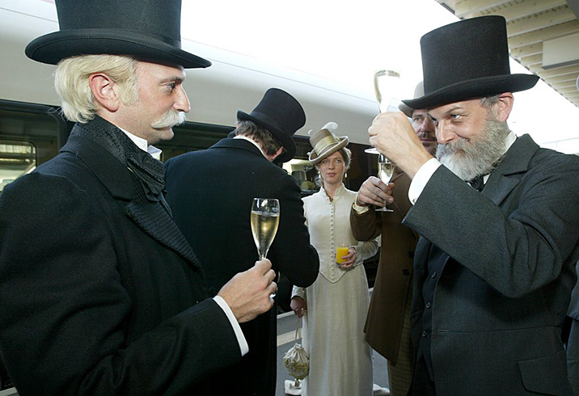
1845-1850: I primi progetti concreti per la costruzione di una ferrovia alpina si concentrano, per la scelta del tracciato, sul Passo del Lucomagno e dello Spluga. Dopo un’accesa disputa sulla linea ferroviaria, nel 1863 vincono i sostenitori della galleria del San Gottardo. Capitanati dal potente imprenditore e politico zurighese Alfred Escher (qui a destra un attore nei panni del pioniere delle ferrovie svizzere ai festeggiamenti per un anniversario), fondano la Società della Ferrovia del San Gottardo.
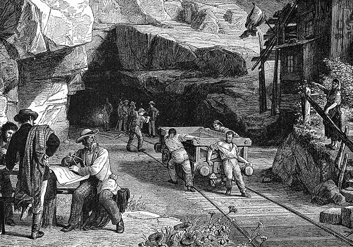
1 ottobre 1872: Inizio ufficiale dei lavori della galleria del San Gottardo.
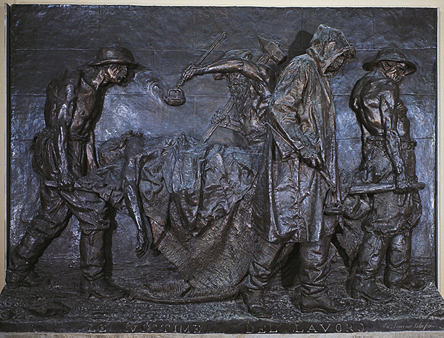
27 luglio 1875: Uno sciopero dei minatori, per lo più italiani, che chiedono un aumento salariale e migliori condizioni di lavoro viene represso con la forza da un distaccamento di gendarmi e civili in armi. Questa opera d’arte di Vincenzo Vela ritrae i minatori come «Le vittime del lavoro».
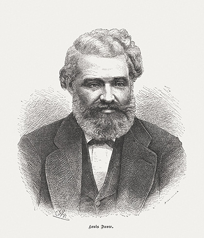
19 luglio 1879: Malato e ridotto sul lastrico, Louis Favre muore per arresto cardiaco durante un’ispezione in galleria. L’imprenditore edile, originario di Ginevra, nel 1872 si era aggiudicato i lavori di costruzione.
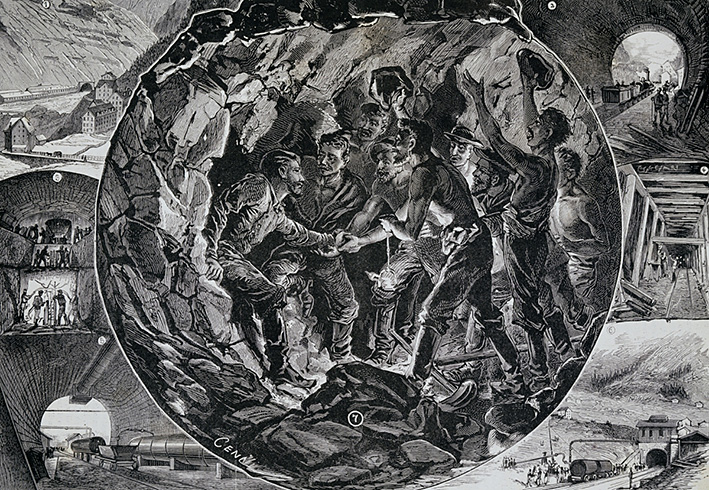
29 febbraio 1880: Traforo della galleria del San Gottardo, allora la galleria più lunga del mondo (15 chilometri).
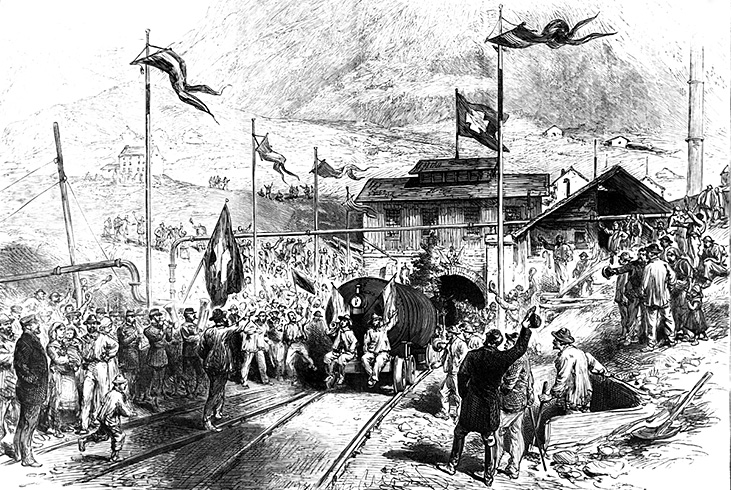
31 maggio/1° giugno 1882: Messa in funzione della linea del San Gottardo.
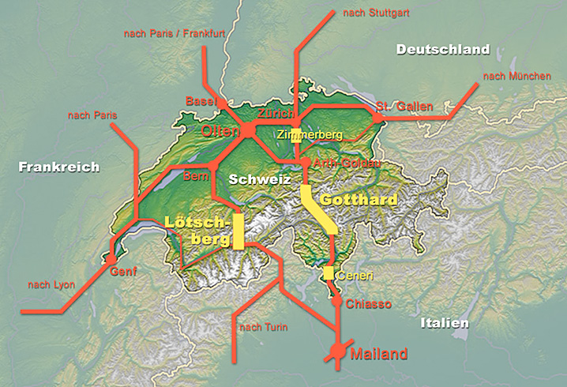
1947: Nella rivista «Prisma» l’ingegnere Eduard Gruner definisce l’idea di una galleria di base del San Gottardo come parte di un sistema ferroviario ad alta velocità. Il grafico delinea il tracciato della nuova galleria di base della NTFA nella rete ferroviaria europea.
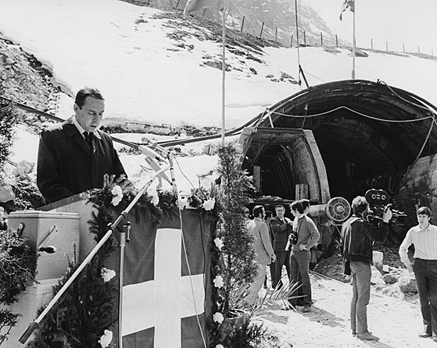
1963-70: La Commissione Gallerie ferroviarie attraverso le Alpi (CGA), nominata dalla Confederazione, valuta diverse soluzioni per la galleria di base, consigliando infine la costruzione di una galleria di base nel San Gottardo e l’ampliamento della linea del Lötschberg con doppio senso di marcia. La foto del 1970 ritrae l’allora Presidente della Confederazione Hans-Peter Tschudi (PS) in occasione dell’inizio dei lavori della galleria stradale a Göschenen.
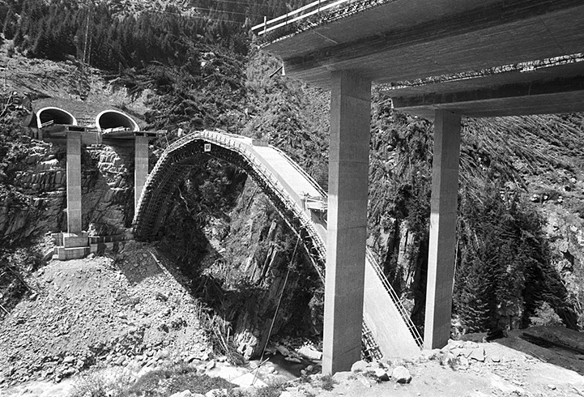
5 settembre 1980: Al termine di cinque anni di lavori si inaugura la galleria stradale del San Gottardo, lunga 16,9 chilometri. Nella foto il cantiere di Schöni con il portale d’accesso del Tunnel Naxberg sulla rampa nord della galleria stradale del San Gottardo nei pressi di Göschenen nel Canton Uri a giugno del 1978.
27 settembre 1992: Alla votazione popolare il 63,6 percento dei cittadini si dichiara favorevole alla costruzione della NTFA.
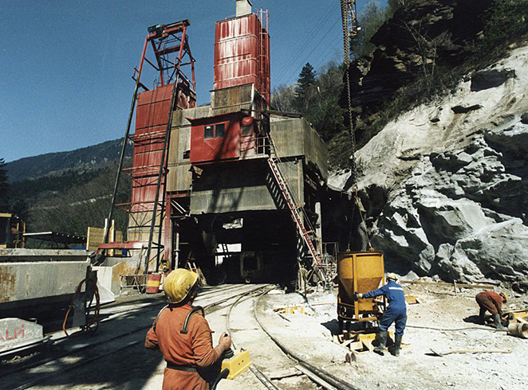
22 settembre 1993: Inizio dei lavori della galleria di base del San Gottardo a Polmengo (TI) con la galleria di sondaggio.
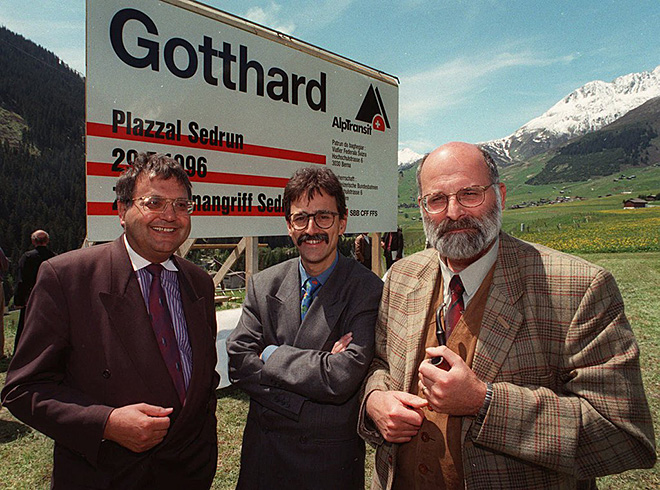
1993-1998: Dopo una disputa sulla redditività della NTFA, il Consiglio federale e il Parlamento ridimensionano il progetto (per es. la costruzione dell’asse del Lötschberg con un unico senso di marcia). Il piano della galleria di base del San Gottardo ha attraversato fasi alterne. Nella foto Pierre-Alain Urech, Direttore generale delle FFS (al centro), Dumeni Columberg, Consigliere nazionale (a sinistra) e Luzi Bärtsch, Consigliere di Stato (a destra), a maggio del 1996 a Sedrun, in evidente atmosfera di ottimismo.
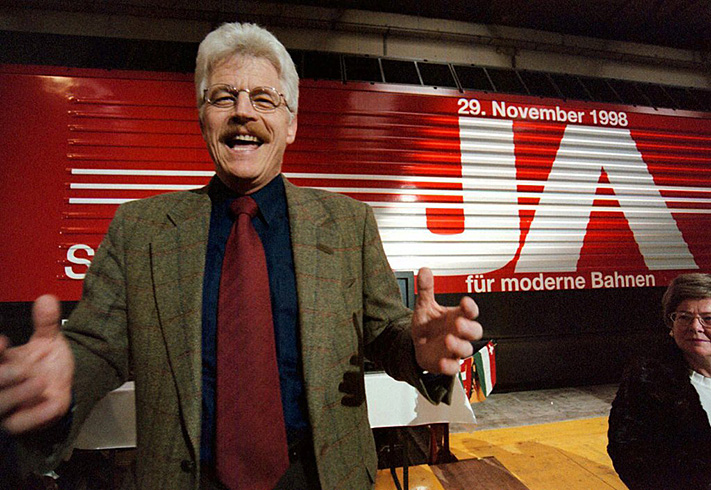
29 novembre 1998: Il Decreto federale concernente la costruzione e il finanziamento dei progetti di infrastruttura e dei trasporti pubblici (FTP), che garantisce anche il finanziamento della NTFA, viene approvato con il 63,5 percento di SÌ. La gioia del Presidente della direzione generale delle FFS Benedikt Weibel ai festeggiamenti per le votazioni a Erstfeld.
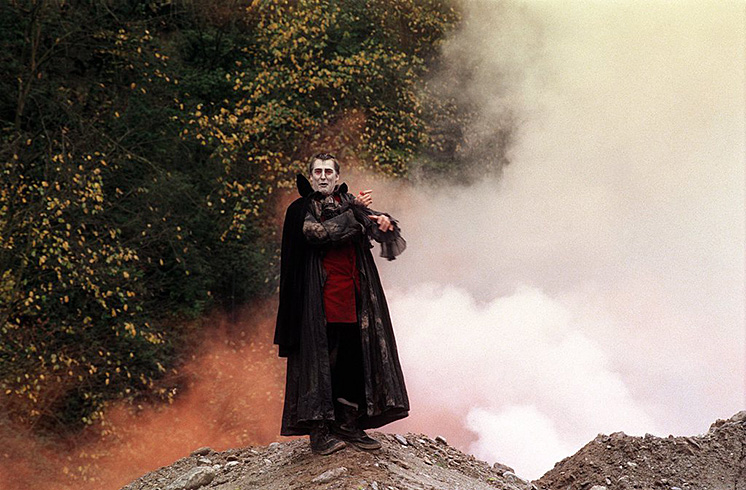
4 novembre 1999: Realizzazione del tunnel ad Amsteg, Uri. A Silenen viene realizzato il cunicolo di accesso per la Nuova trasversale ferroviaria alpina (NTFA) del San Gottardo. Una festa per cacciare il diavolo dal San Gottardo.
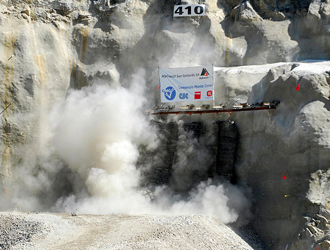
2 giugno 2006: Inizio dei lavori alla galleria di base del Monte Ceneri. L’apertura è prevista per il 2020. Nella foto la caduta del diaframma l’11 settembre 2007 nel cantiere di Sigirino.
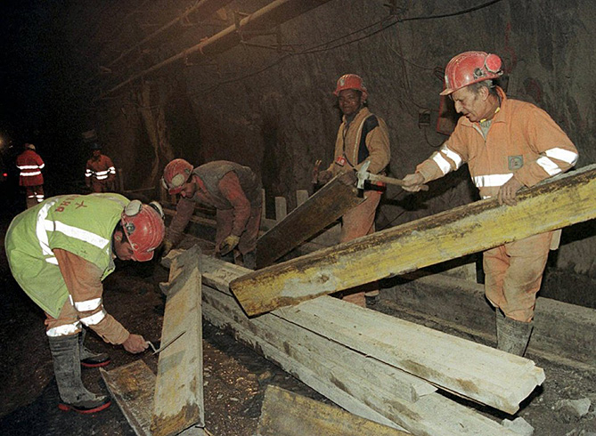
9 dicembre 2007: Messa in funzione della galleria di base di Lötschberg. Questa foto del 2010 mostra alcuni minatori nella galleria laterale di Goppenstein che, in seguito alla misura occupazionale “Tunneljob Wallis” del governo vallesano, contribuiscono alla costruzione della galleria di base di Lötschberg.
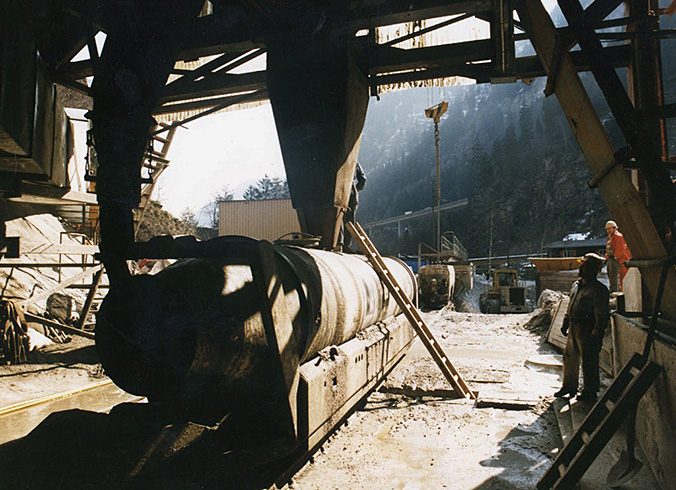
3 febbraio 2009: Nella galleria di base del San Gottardo viene superata la sacca di Piora, un fenomeno geologico particolare. Questa foto del 1996 mostra alcuni scavi in questa zona critica del massiccio del Gottardo.
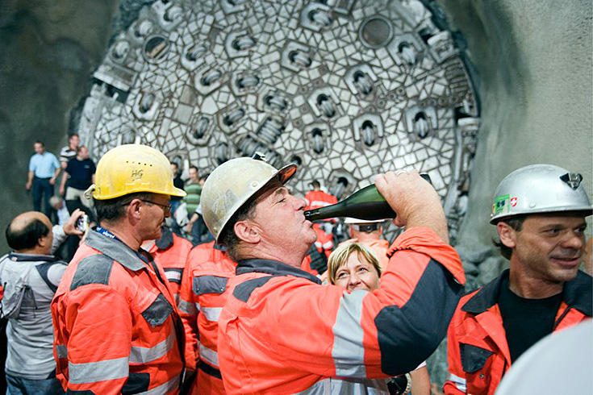
15 ottobre 2010: Caduta del diaframma principale. Lo scavo della galleria est della galleria di base del San Gottardo è ultimato, i minatori festeggiano.
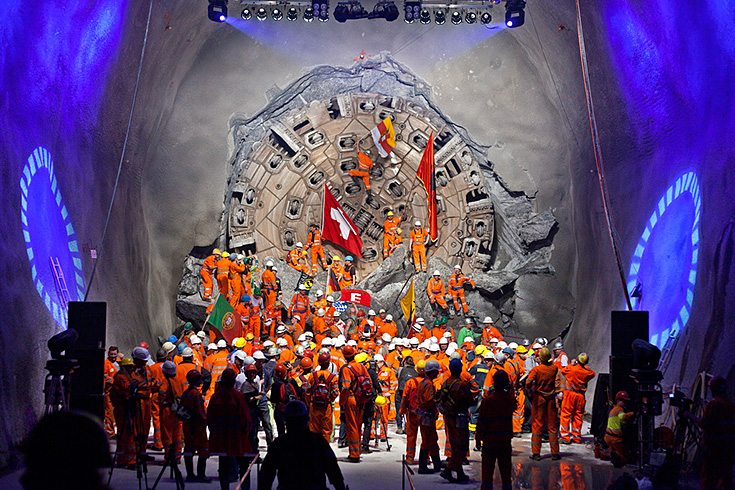
23 marzo 2011: Traforo della galleria ovest. La gioia dei minatori dopo l’avanzamento della fresa «Heidi» nell’ultimo tratto della galleria ovest della galleria di base del San Gottardo.
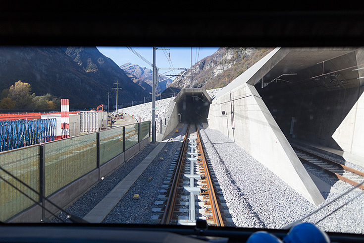
Dal 2010 nella galleria di base vengono installate le tecnologie ferroviarie ed effettuati i test di controllo. L’apertura ufficiale della galleria di base è fissata per il 1° giugno 2016 con quattro giorni di festeggiamenti. Con i nuovi orari, dall’11 dicembre 2016 il tunnel ferroviario entrerà regolarmente in funzione.